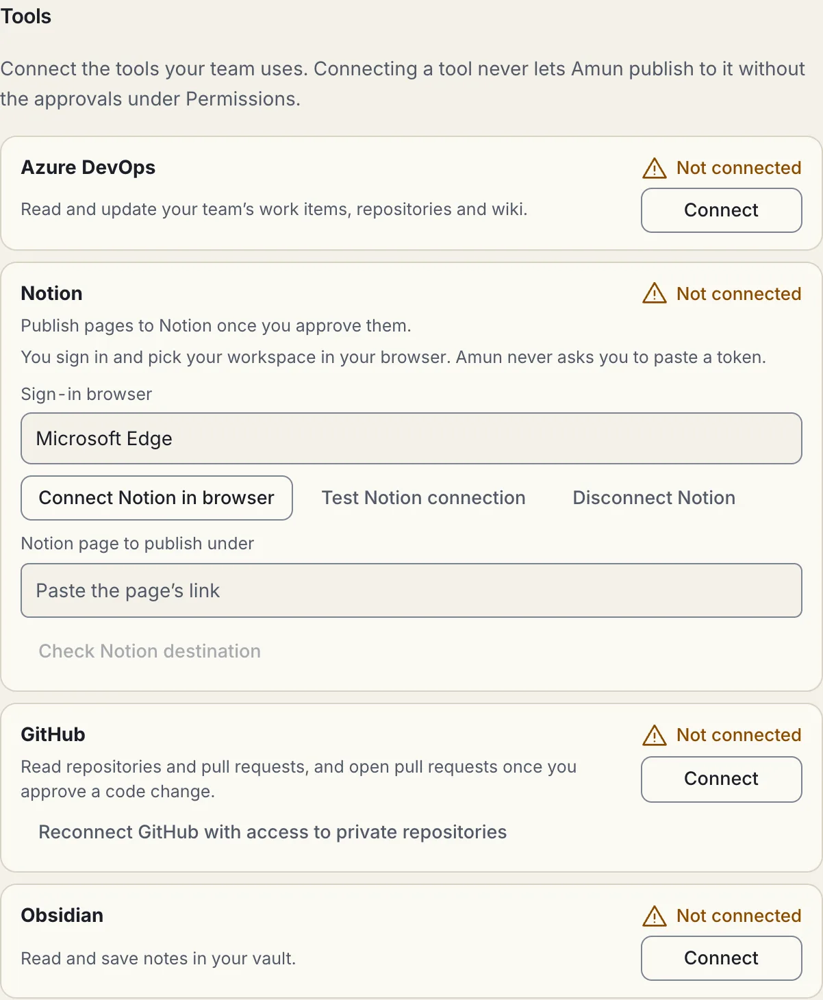
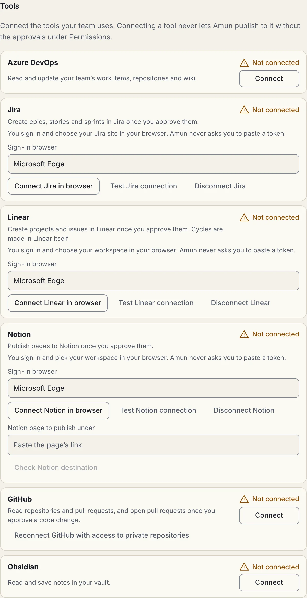
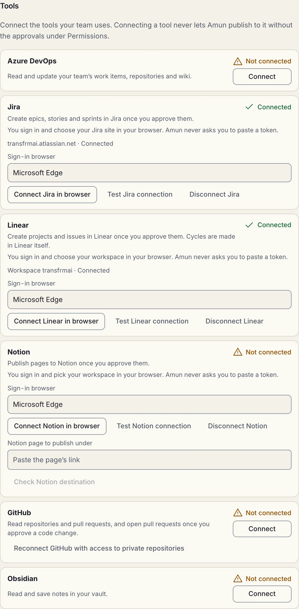
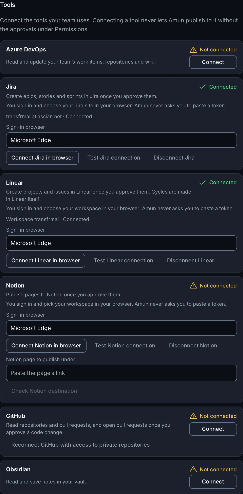
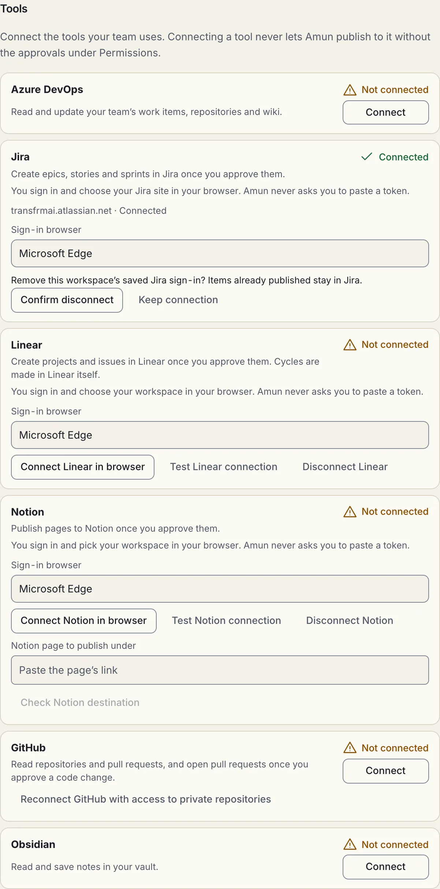

Settings › Tools: add Jira and Linear
A proposal for your approval. Nothing on screen has changed yet. The “after” pictures are the real app with the two new cards placed in it, using its own styles.
Workflow it enables: you connect Jira or Linear once by signing in in your browser. After that, Firstmate can raise a plan of epics, stories and sprints for either one. You approve it in the existing plan review card, and Amun publishes exactly that list and checks the result. The sign-in, publishing and checks are already built (PR #59); only these cards are missing.
- Reuses: the Notion card, as it is
- Adds: two cards, nothing else on the screen
- Changes: no existing card, text or order of the others
Current screen beside the proposal


What exactly is added
- A Jira card and a Linear card, placed right after Azure DevOps. This keeps the three work trackers together. If you prefer, they can go at the end, after Obsidian.
- The same parts as the Notion card: name, status (Not connected / Checking… / Connected / Not working), one line on what it is for, the “You sign in … in your browser. Amun never asks you to paste a token.” line, the Sign-in browser choice (Microsoft Edge or Dia), and the three buttons: Connect … in browser, Test … connection and Disconnect ….
- What each one is for: Jira: “Create epics, stories and sprints in Jira once you approve them.” Linear: “Create projects and issues in Linear once you approve them. Cycles are made in Linear itself.” The second sentence is there because Linear does not let Amun create or start cycles.
- One line once connected, showing where the sign-in leads, in the same small grey text the Azure DevOps card uses for a saved connection: “transfrmai.atlassian.net · Connected” or “Workspace transfrmai · Connected”.
- Disconnect asks first, in the same words and buttons as Notion: “Remove this workspace’s saved Jira sign-in? Items already published stay in Jira.” Then Confirm disconnect or Keep connection.
- No destination field. Unlike Notion, there is nothing to paste. Each plan names its Jira site and project, or its Linear team, and you see them on the review card before you approve.
States



For you to decide
1. Place
After Azure DevOps (shown), or at the end of the list?
2. Wording
Are the two “what it is for” lines and the connected line right? Mark any word you want changed.
3. Browser choice
Keep the Edge / Dia choice on each card, as Notion has it, or always use Microsoft Edge for Jira and Linear?
The “after” pictures were made by placing the proposed cards into the running app (preview daemon, sample data) and capturing them. They are not a mock-up. Connected states use the real test site and workspace names. Built for review with the /impeccable skill; nothing is implemented until you approve.